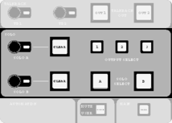
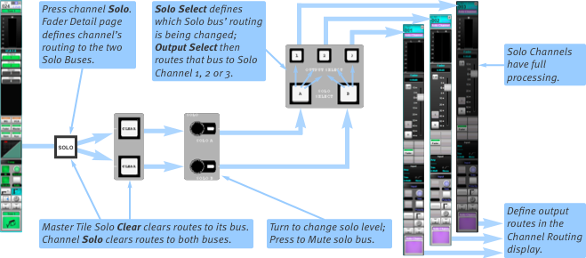
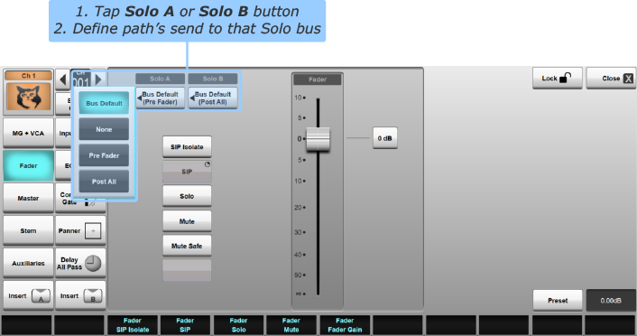
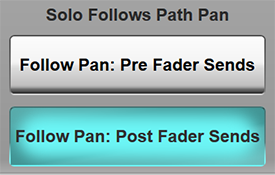
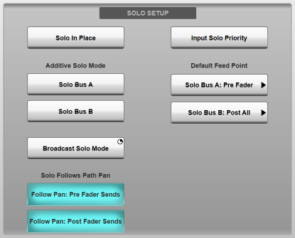
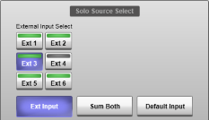
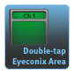
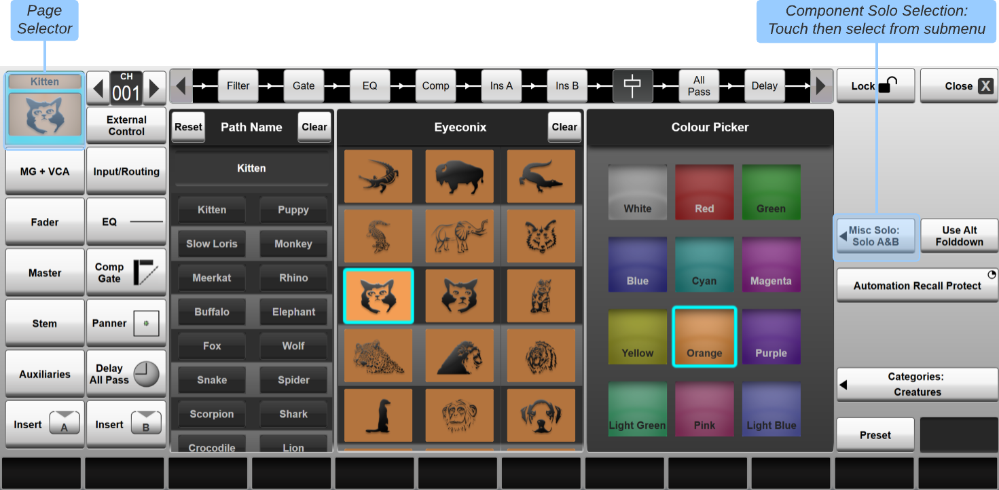

Solo
Setting Up the Solo System
SSL Live has two Solo buses, A & B, that feed three Solo Output Channels (1, 2, 3).
When the SOLO button on a Fader Tile is pressed, that path's signal is fed to the Solo buses.
Solo Bus level can be adjusted using the encoders in the Solo section on the Master Tile. Pressing on the encoder will mute/unmute the Solo Bus.
Solo Bus Outputs must be routed to Solo Output Channels in order for the signal to go any further. There is a mini Solo Matrix on the Master Tile that controls this.

The A & B buttons select which Solo Bus you are routing. Select the Solo Bus you wish to route.
The 1, 2 and 3 buttons select which of the Solo Output Channels that Solo Bus should route to. Select the Solo Output Channels that you wish to feed from the Solo Bus.
Solo Bus Output Routing and level can also be adjusted from the Solo level button to the right of the Main Screen.

In the Channel View, locate the Solo Output Channels (by default, these are purple and located in the "Misc" Bank on all Fader Tiles). Press Solo on a path with signal and ensure the encoder for the Solo Bus you are using is up. Turn the fader up and you should see signal in the meter (by default Solo Channel Meters are Post All).
Now that signal is getting to the Solo Channel, the output must be routed. This is done from the Detail View of the Solo Channel in the Input/Routing section, just like other paths.
To route the output of a Solo Channel to the headphone jacks under Fader Tiles, route the output to Local Analogue Outputs "HP1 L" & "HP1 R" for the left headphone jack and "HP2 L" & "HP2 R" for the right headphone jack.
Note: For L300, L350, L450, L500, L500 Plus, L550 and L650 consoles, Local Analogue Outputs A13-A16 are also internally hard-wired in parallel to the console's two headphone sockets.
For this reason, you should avoid using XLR outputs on the back of the console if you are also using the corresponding headphone socket, as this will result in degraded audio performance.
For L100 and L200 consoles, the headphone sockets are not hard-wired to any Local Analogue Outputs and act independently.
This diagram shows an overview of the solo system:

Solo Channels have the same processing as regular Channels, meaning the soloed signal can be EQ'd, compressed etc. as desired.
- Use the Solo Channel's Delay to time align headphones/nearfield monitors at FOH to the main PA system. Delay can be entered in metres for ease of configuration.
- Insert signal analysers from the FX Rack (e.g. Spectra-lyser and Phase-Scope) into the Solo Channel's Insert points; Soloed paths can then be easily monitored.
Send to Solo Bus Feed Point
Each path can send to Solo Bus A and/or B with the following feed point options:
- Bus Default: Feeds to the Solo Bus using the Default Feed Point setting
- None: Does not feed to the Solo Bus
- Pre Fader: Feeds to the Solo Bus Pre Fader
- Post All: Feeds to the Solo Bus at the very end of the signal chain (Post Fader but also post all other path processing elements)
This is set in the Fader page of the Detail View.

The Bus Default feed point is set in Menu > Setup > Options > User tab.
- Switch between Pre- and Post-Fade (Post All) listen using the Default Feed Point options.
- The default feed point for each Solo bus can be toggled from a User Key.
New paths will be created with both Solo Bus feed points set to the Bus Default.
Note: The Fader's position in the channel processing order is not fixed and is fully user-definable. A Pre Fader feed point means the position directly before the Fader in the signal chain, wherever the Fader is located. Path Processing Order is set in the Config page of the Detail View (See Processing Order for details).Panning for Solo Sends

The Solo Follow Pan options control whether signal that feeds the Solo Buses follows the pan of the path.
Notes:Panning from SSL Live console paths can be configured for each send individually. For this reason, the panner is not part of the fader in the signal chain, and therefore sending to a Bus Post Fader does not also mean Post Pan.
To adjust the Follow Pan settings go to MENU > Setup > Options > USER tab.
In the SOLO SETUP section to the left are two buttons: Follow Pan: Pre Fader Sends and Follow Pan: Post Fader Sends.
Follow Pan: Pre Fader Sends affects all Pre Fader sends to the Solo buses. When engaged, the path's main Pan will be used for the send to the Solo buses.
Disengaging Follow Pan: Pre Fader Sends means for Pre Fader sends to the Solo buses, the path's main Pan will be ignored. The signal will be sent to the Solo Bus using the default Folddown settings. These are adjustable in MENU > Setup > Options > SYSTEM tab.
For example, Channel 1 is mono, and is feeding to Solo Bus A Pre Fader. Solo Bus A is sending to Solo Channel 1, which is stereo. Channel 1 is panned hard left. Engaging Follow Pan: Pre Fader Sends will mean the signal is sent to Solo Channel 1 hard left. Disengaging Follow Pan: Pre Fader Sends will mean the signal is sent to Solo Channel 1 centre.
Follow Pan: Post Fader Sends works in the same way as its Pre Fader equivalent, except for Post Fader Sends.
System Templates Default Solo Setup
The SSL System Templates are pre-configured with the following Solo Settings:
| FOH Templates | Mon Templates | |
|---|---|---|
| Solo Bus A Default Feed Point | Post All | Pre Fader |
| Solo Bus B Default Feed Point | Pre Fader | Post All |
| Individual Path Feeds to Solo Bus A | Bus Default | Bus Default |
| Individual Path Feeds to Solo Bus B | Bus Default | Bus Default for all paths other than IEMs. IEMs set to None. |
| Solo Bus A Feeding | Solo Channels 1 & 2 | Solo Channel 2 ("Solo IEMs") |
| Solo Bus B Feeding | Solo Channels 1 & 2 | Solo Channel 3 ("Solo Wedge") |
| Solo Channel 1 | Stereo, feeding Left Headphone Socket | Stereo, feeding Left Headphone Socket (for Cans) |
| Solo Channel 2 | Stereo, feeding Right Headphone Socket | Stereo, feeding Right Headphone Socket (for IEMs) |
| Solo Channel 3 | Stereo, feeding nowhere | Mono, feeding Local Analogue Output A12 (for Wedge) |
Solo Modes
SSL Live consoles contain the following Solo Modes:
- Inter-cancelling (default)
- Momentary
- Additive for Solo Bus A
- Additive for Solo Bus B
- Solo In Place
- Input Solo Priority
- Broadcast Solo Mode
To change the Solo Modes, go to MENU > Setup > Options > User tab. Tap the appropriate Solo Mode button in the Solo Setup area. The modes are described in detail below.

Additive/Inter-Cancelling Solo Mode
By default, SOLO buttons are inter-cancelling (also known as auto-cancelling or single solo mode) - pressing one will cancel all other Solo buttons.
Tapping on the Solo Bus A or Solo Bus B buttons in the Additive Solo Mode section of the User Options tab turns on Additive Solo Mode for that Solo Bus.
When in Additive Solo Mode, pressing the SOLO buttons latches them on/off, so multiple SOLO buttons can be engaged at once.
Notes:It is possible to Solo two or more channels even in inter-cancelling solo mode; simply press their SOLO buttons simultaneously.
Inter-cancelling Solo Mode will override Additive solo mode, so if channels are set to go to both Solo buses but only one Solo bus is set to Additive Solo mode, the solo operation will remain inter-cancelling.
Temporary Momentary Mode
To temporarily use Momentary Solo Mode, press and hold any of the SOLO buttons on the Fader Tiles and the signal will be sent to the Solo buses.
Releasing the SOLO button will disengage it and the signal will stop sending to the Solo buses.
Solo In Place
The solo system can also operate in Solo In Place (or SIP) mode, where the channel SOLO buttons change function from sending that channel to the solo buses (standard operation), to listening to channels 'in place' of the main mix (by muting all other channels from the Master mix outputs).
In Solo In Place, the SOLO Buttons are press & hold buttons.
This is a safety feature, since Solo In Place is a destructive operation.
Solo In Place is always Additive.
When in Solo In Place mode, a flashing icon will appear in the Status Bar.
SIP Isolate
Paths have an SIP Isolate button, to prevent the path from being muted when other channels are soloed in SIP mode. This can be useful to isolate effects channels or subgroups that you want to listen to in conjunction with the channel being soloed.
To turn on SIP Isolate open the Detail View for that path and go to the Fader section. Engage SIP Isolate.
SIP Isolate can also be accessed from the Quick Controls by selecting the Fader Assign button in the Channel View.
Input Solo Priority
Input Solo Priority allows Channel Solos to temporarily override Stem and Aux solos.
When the user solos a Stem or Aux, followed by one or more channels, the bus Solo is temporarily overridden. When the channel Solos are cleared, the bus will be soloed again.
To turn on Input Solo Priority go to MENU > Setup > Options > USER tab. In the SOLO SETUP section to the left, tap Input Solo Priority to engage it.
Now press the SOLO button on a Stem or an Aux. The Stem/Aux's signal will be sent to the solo buses. The bus' SOLO button will turn yellow to indicate this.
Now press SOLO on a Channel. Only the Channel's signal will be sent to the solo buses. The Channel's SOLO button will turn yellow to indicate this. The Stem/Aux's SOLO button will turn orange to indicate that it was the most recently soloed bus.
Press the Channel's SOLO button again to un-solo it, and the Stem/Aux will be soloed again. The Stem/Aux's signal will go to the SOLO buses again and the Stem/Aux's SOLO button has turned yellow to indicate this.
Press the Stem Aux's SOLO button again to clear the Solo.
The Solo CLEAR button on the Master Tile can be used to clear solos in Input Solo Priority mode. When Input Solo Priority is engaged the CLEAR button will clear the most recent solo. So if a bus is soloed, then a Channel is soloed, the CLEAR button will need to be pressed twice to clear both solos.
Note: To use Input Solo Priority with Solo in Place, first solo the bus using the SOLO button on the Fader Tile. Now solo the channel using the SOLO buttons on the Main Screen in the Fader section of the Channel View or Detail View.To turn off Input Solo Priority return to MENU > Setup > Options > USER tab and tap Input Solo Priority again to disengage it.
Broadcast Solo Mode
When activated, the functions of the Solo channels are reconfigured so that the outputs can be used as traditional monitor outputs feeding a mono, stereo, or 5.1 speaker setup according to the Solo Channel format.
The Solo Channel output level is controlled directly from the Solo Channel Fader, which becomes the main Monitor level control. The Solo A and Solo B controls on the Master Tile continue to trim the level of their respective Solo Buses when routed to a Solo Channel and a path Solo is active. However, the Solo A and B controls no longer affect the level of the Default/External monitor source assigned to a Solo Channel (see below) and there is no requirement to route a Solo Bus to a Solo Channel in order to hear the Default or External inputs.
A Solo Channel DIM function has been added, controlled by the Solo Channel's SOLO button (labelled Solo/Dim on the Master Tile's Main Fader). Dim level can be set from 0 to -40 dB, from the Solo Channel Fader section, either from the touch screen or the Control Tile via the Fader TB button.
It is also possible to control the Dim remotely using the console's GPI ports. GPI 1, 3 and 5 will control the Dim for Solo Channels 1, 2 and 3 respectively. Similarly, GPI's 2, 4 and 6 will toggle the Mute for Solo Channels 1, 2, and 3 respectively.
If a separate solo speaker is in use, the main monitor feed can be dimmed when a path Solo is active using the Auto Dim function. This is also enabled from the Solo Channel Fader section.
The default configuration is for all paths to route Post All processing to Solo Bus A and Pre Fader to Solo Bus B. Solo Buses A and B feed Solo Outputs 1 and 2 respectively by default. So, for example, route Solo Channel 1 to a set of stereo Monitors and Solo Channel 2 to a dedicated 'PFL' speaker. The Default Input for Solo Channel 1 could be set to the main mix output. This would be overridden by soloing a path.
Engage the Auto Dim button in Solo Channel 1's Fader Detail page. This will automatically dim the output to the main Monitor outputs from Solo Channel 1 whenever a path is soloed to the 'PFL' output from Solo Channel 2 (fed from Solo Bus B).
Default Solo Source
Each of the three Solo Output Channels can be configured to receive a default input source. This can be any source within the console; the main mix output, a comms system feed or a certain monitor mix etc. The default solo source is independent for each Solo output channel.
Go to the Detail View for a Solo Channel and go to Input/Routing. Tap Route Default Input on the right and the Routing View will open.
Once the Default Input has been routed, select Default Input in the Solo Source Select area of the Input/Routing page.
The Solo Bus assigned to the Solo Channel will control the level of the default solo source in the Solo Channel, so level and mute control is available from the Solo Bus controls on the Master Tile and main screen Solo popout. Deassigning both Solo Buses from the Solo Channel will mute the external input.
Note: If both Solo Buses are assigned to the same Solo Channel, both Solo Buses will control the level of the default solo source in parallel for that Solo Channel.External Inputs
Similar to the Default Solo Source section described above, an additional six inputs may be injected into the Solo Channel for monitoring of mixes, program outputs etc.
Each external input can be routed using the Route External Input buttons to the right of the Solo Channel's Input/Routing Detail page.

Select Ext Input in the Solo Source Select section to the left of the same page, then use the Ext 1 - Ext 6 buttons above it to select which external input is being monitored. The LED bars will light green if the input has been routed to a source.
Select Sum Both to listen to the external input and default source together.
The External source selectors are also available on the Control Tile small screen, in the Solo Channel's Input section.
The Solo Bus assigned to the Solo Channel will control the level of the external input in the Solo Channel, so level and mute control is available from the Solo Bus controls on the Master Tile and main screen Solo popout. Deassigning both Solo Buses from the Solo Channel will mute the external input.
Default/External Input Active State
The Default/External inputs can be configured to be active at all times or only when no other source is being soloed. Use the Ext/Default Input Always Active button in the Solo Channel's Input/Routing page to determine if the source is active (button pressed) or muted when other sources have been routed to the Solo Channel via the path/effect Solo buttons.
Typical examples for the Default/External sources are the main Master bus when mixing FOH (where the Ext/Default Input Always Active option should be turned off so that individual paths can be soloed in isolation) or injecting a tech/shout comms system into a set of IEMs when mixing monitors (Ext/Default Input Always Active enabled so that the comms source is summed with any other soloed signals).
Channel Component Solo Configuration (Misc Solo)
Some channel elements have their own solo functions, allowing you to hear, for example, the pre-trim input, or the key input of the compressor or gate.
The solo bus used for these solo signals is defined on a channel wide basis in the Eyeconix Detail dialogue, opened by double-tapping in the Eyeconix area at the base of the channel:



A dialogue similar to the below will appear:

Note:The buttons down the left of the dialogue define which Detail page is displayed. If the Name, Eyeconix and Colour page isn't already selected, touch the channel Eyeconix area in the top left corner of the dialogue.
The Channel Scroller (near the top left corner) can be used to scroll the dialogue to a different channel.
Touch the Misc Solo: button on the right of the dialogue to open up a submenu of bus options;
Now select Solo A&B, Solo A, Solo B or None.
Effects Rack Solo Configuration
Some modules within the Effects Racks also have solo functions. The solo bus used for these solo signals is defined for each Rack, using the Misc Solo: buttons down the right side of the Effects screen.
Touch the Misc Solo: button for the appropriate Rack to open up a submenu of bus options;
Now select Solo A&B, Solo A, Solo B or None.
Useful Links:
User OptionsMaster Tile
Index and Glossary